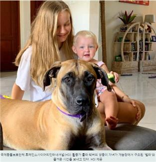
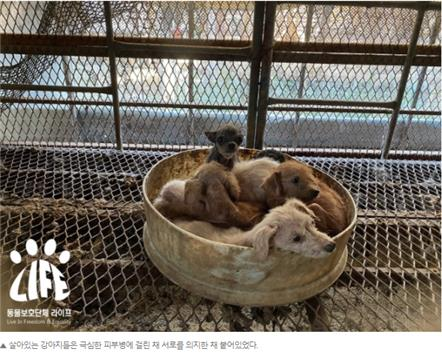

statement, there is no country for edible dogs.
Registration Date Author Life Attachment activitydata_04_05 There is no country for edible dogs{kind=link}
In the reality of South Korea, where the distinction between dogs and edible dogs is colorless, the person who is going to be president with fairness, common sense, and justice dismisses the problem of illegally stained dog as a matter of personal choice, and in the reality of Korea, where the distinction between dogs and edible dogs is colorless, I have a worldview that there are separate edible dogs, and I think of dogs as family members at home, so I would like to ask you what this is and not a steamed discrimination. Can the world we live in be common sense?
A leading presidential candidate of the Republic of Korea made a statement at a debate that was seen by the whole nation to the effect that eating a dog is a matter of personal choice, and that there are separate edible dogs, so that dog food and the abuse of pets are separate. In conclusion, there are no separate edible dogs, and dog food and pet abuse are closely correlated. It is disastrous that a man without this basic awareness is a leading presidential candidate of the Republic of Korea, and it makes us even more miserable that he is such a terrible caregiver for the dogs and cats he keeps in his home.
Is there an edible dog that candidate Mo spoke of? So what kind of dog is an edible dog? If we define it, we can say that all dogs that are bred for edible purposes are edible dogs. In South Korea, where dogs are still eaten.
The reality of the edible dogs that candidate Mo spoke of is disastrous.
In 2013, Channel A's Food X-Files broadcast found surgical iron cores in the area of dog meat that had been given to guests. For edible purposes, a dog that feeds on food waste to save money on food is likely to have been injured and treated at a cost of millions of won in hospital bills. In someone's home, a dog that has lived as part of a family must have been on someone's table.
(source:https://m.animalplanet.co.kr/news/?artNo=2871#_enliple)
That case was 7 years ago, so if you claim it's different than it is now, let's take a recent example of this. Just 2 months ago, on August 31, a large-scale edible dog farm was detected in Jindo County, Jeollanam-do. Of the 58 adult dogs raised here, 11 were gin dogs that had to be managed by the state, and a whopping 4 of the 11 were natural monuments registered as Chan Yan Monument No. 53.
It is not known that this dog farm has been open for over 20 years in its current location, but how many natural monuments and caterpillars have died in the past? So was the catamaran an edible dog?
(Source: Satanic Animal Protection Group Life
https://www.hani.co.kr/arti/animalpeople/companion_animal/1013974.html))
(Natural Monument No. 53 Jindo Dog Found at the Jindo County Edible Dog Farm (Pearl, Moon, Bongja, Autumn clockwise from top left)
The so-called "Osun Yi Incident", which became the trigger for the closure of the Busan Gupo Dog Market, is an incident in which a neighboring retriever species Osun was kidnapped and dragged to the opening site to create a dog shop. O'Sun's family loved him terribly, but in the end, it was just something to eat for somebody. Leaving aside the ownership of the Osun Lee, is the Pentagon also an edible dog?
(Source:https://news.kbs.co.kr/news/view.do?ncd=3646683&ref=D)
Since 2014, the animal protection organization HSI (Humane Society International, HSI Korea) has been helping to persuade Korean edible dog farms to close their dog farms and rescue and adopt dogs. So far, we've sent about 2,000 dogs overseas for adoption, including some of which we have in the image of an edible dog. However, these dogs are well adopted abroad and get along well with people. So are these dogs?
(Source:https://news.v.daum.net/v/20200917135151473)
So is there really no link between dog food and pet abuse? This premise starts with the belief that there is a separate food dog and a companion dog. I've explained in the above article that edible dogs and dogs are no different, but if you don't understand them or treat them as part of them, any further explanation would be useless.
However, the vast majority of animals that are bred for edible purposes are abused. The reason for growing it for edible purposes is only one thing: economic benefits. Because in order to maximize the profit, you need to feed the animals less, lock them up more, and control their instincts. The less you reduce the expenses that go into the animals, the greater the profits. These dog food practices and the resulting rehabilitation industry are a thankful presence for pet farmers and natural monument farmers. This is because even if an animal that used to be used as a pet or a tool for the production of natural monuments grows older, becomes less reproductive or has a disease, and has no further utility value, it can still be sold for a small amount of money and profited.
In this safeguard-enabled structure, pet producers can shift the moral responsibility for animal culling to edible dog farmers and increase their enthusiasm for the constant production of animals. Repeated pregnancy, childbirth and lactation several times a year until the injection of estrus inducers. Then the calcium in the whole body runs out, and the genital diseases and the mammary gland tumors get all kinds of diseases, and that's the last life of the dog. Still, I have been eating cheap dog food, and I can't even eat that cheap dog food, and I end up living in food waste, and sometimes I end up on the floor, and sometimes it rots, and sometimes it becomes someone's meal. Since then, there's no link between dog food and pet abuse?
(Source:https://www.seoul.co.kr/news/newsView.php?id=20201212500033&wlog_tag3=daum)
Some people are asking why you shouldn't eat only dogs while eating cows, pigs, and chickens, but you're not saying that you shouldn't eat dogs alone, but that you should ban them from eating food first, and reduce or ban the edibles of cattle, pigs, and chickens. Eating animals is a structure that inevitably involves animal cruelty, and in recent years it has also been cited as a cause of serious pollution to the global environment, which has led to the implication of saving the planet.
Carbon neutrality, which has recently been discussed as a national agenda, is also aimed at reviving the global environment, and I would like to point out the problem of meat eating, which accounts for a huge amount of carbon dioxide emissions while spending huge amounts of money to build green facilities and alternative developments, and I would also like to point out the issue of betrayal of interest rates, which is a significant drop.
As the leader of a nation, you must not only do nothing until there is a social consensus that may take decades to come, and not only stand by the abuse of animals, but also do what is the basis of social consensus. For example, we need to do things that only the government can do, such as a total ban on the breeding of farms in dog farms, a total ban on the feeding of food waste, and the creation of policies for dog farmers to work full-time. Don't forget that the leaders of the countries must now give the people an answer as to how long they should only listen to the call of the Bureau of Animal Cruelty.
2021.11.01.
Animal Protection Group Life